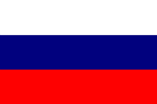

Russian Cuisine

Welcome to the hub of all that is Russian Cuisine. Russian cuisine mainly involves ingredients that consists of breads, potatos, meats and fats. These ingrediants were necessary to combat with the harsh cold environment that Russia is commonly associated with. The Russian cuisine was created with the intention of keeping you warm by consuming fats. The main cuisine that has always been associtated with Russian cuisine are soups and there are several different kinds that are placed into several different groups with meat dishes being the second important dish in Russian cuisine.
You may come across small amounts of Russian resturants around the world but not in much frequency as certian cultures.
Here on this page you will see many links to many sites relating to Russian recipes, Russian resturants and facts about Russian cuisine.
To Learn More Follow these links:
| Russian Recipes | Russian Restaurants | Russian Food Facts |
|---|---|---|
| RusCuisine.com | Noyan Tun | Interesting Facts About Russia |
| Allreipes.com-Russian | Puppen Haus | FactsAboutRussia-Russian Cuisine |
| Saveur.com | Biblioteca | Moscow Russia Insiders Guide |
| EveryDayRussian.com | Kazachiy Kuren | Expatica.ru |
| Menu | ||
|---|---|---|
| Russian | Chinese | Spanish |
|  |  |  |
|  |  |